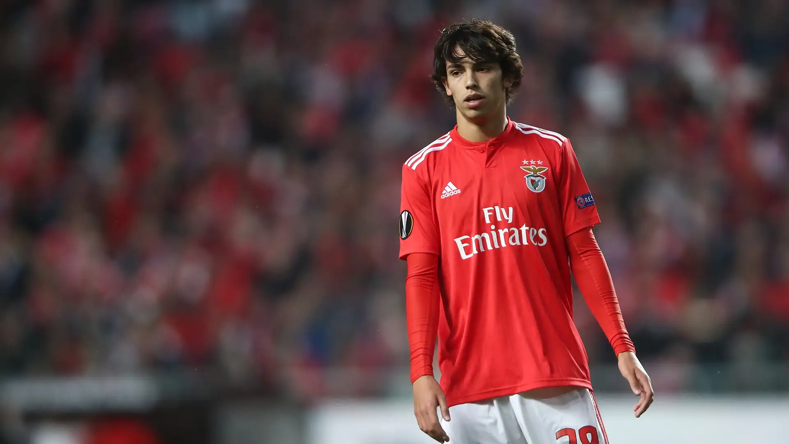

El Sport Lisboa e Benfica, conocido simplemente como Benfica, es un club polideportivo de la ciudad de Lisboa, Portugal

Benfica
Con ocho años ingresó en la academia del FC Porto, donde permaneció durante cinco años. Entró en las filas inferiores del SL Benfica, y en 2016 pasó al segundo equipo, para participar en la Segunda División de Portugal. Disputó veintinueve partidos y marcó siete goles.
Se inició como profesional a los dieciséis años en el equipo de la Liga B del Benfica el 17 de septiembre de 2016, reemplazando a Aurélio Buta en el minuto 83 en un empate sin goles en Freamunde.
Tras entrar al primer equipo, debutó el 18 de agosto de 2018 en la liga frente al Boavista FC, ganando el partido por 0-2.
Tres días después, el 21 de agosto de 2018, hizo su debut en la Liga de Campeones de la UEFA contra el PAOK Salónica FC. Se convirtió en el jugador más joven (diecinueve años) en marcar un triplete en la Liga Europea de la UEFA el 11 de abril de 2019.